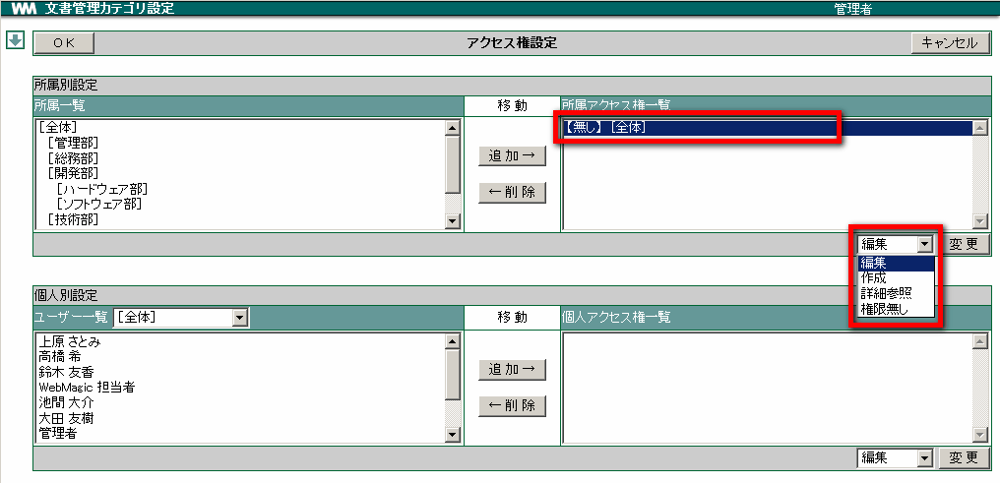
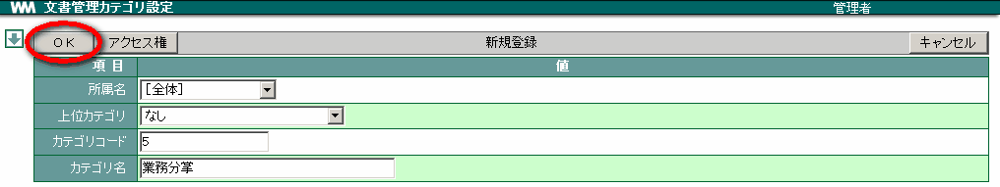

7. 文書管理¶
文書管理では、情報を分類分けする「カテゴリ」を設定します。カテゴリは所属ごとに設定できます。カテゴリごとにアクセス権の設定を行えますので、「営業部のみが閲覧できるカテゴリ」や「田中さんと加藤さんだけが書き込むことができるカテゴリ」の作成が行えます。
7.1. 文書管理のカテゴリを設定する¶
文書管理のカテゴリを設定します。また、設定したカテゴリに対して所属単位・ユーザー単位ごとにアクセス権を設定できます。
メニューの
 をクリックします。
をクリックします。 をクリックします。
をクリックします。新規登録 をクリックします。

「所属名」を選択し、各項目を入力して アクセス権 をクリックします。

「所属一覧」からアクセス権を設定したい所属を選択し、 追加→ をクリックします。

「所属アクセス権一覧」から所属を選択し、設定したいアクセス権をリストから選択して、 変更 をクリックしたあと、 OK をクリックします。

変更 をクリックし、 OK をクリックします。

OK をクリックします。

Note
個人へのアクセス権設定も所属と同様の操作で 追加・削除 を行います。
Note
カテゴリコードには任意の数字を入力します。複数のカテゴリを登録する場合、カテゴリコードが重複しないようにします。また、複数のカテゴリを登録した場合、カテゴリはカテゴリコードが若い順に表示されます。
<アクセス権の説明>
| 参照 | カテゴリに書き込まれている情報を閲覧できます。（情報を追加・変更はできません） |
| 作成 | カテゴリに情報を書き込むことができます。 |
| 権限無し | カテゴリにアクセスできません。 |